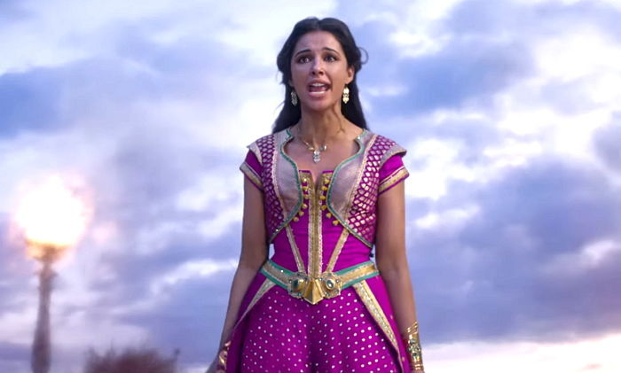
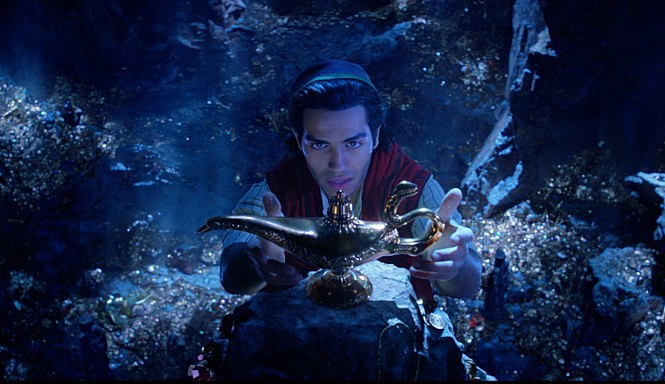

- 대표 OST 소개
A whole new world

Speechless

Arabian Nights
- 알라딘의 노래중 가장 유명한 노래입니다. 알라딘과 자스민이
서로의 마음을 확인하고 양탄자를 타고 날으며 새로운 눈으로
세상을 보는 내용의 노래입니다.
- 자스민은 여자라는 이유로 원하는 것을 이루지 못하며 강박속
에 살았던 울분을 이제 침묵하지 않겠다며 부르는 내용의
노래입니다.
- 알라딘 영화 초반부에 나오며 웅장하면서 신나는 곡입니다.
알라딘의 신비로운 느낌을 잘 표현해 주는 노래입니다.